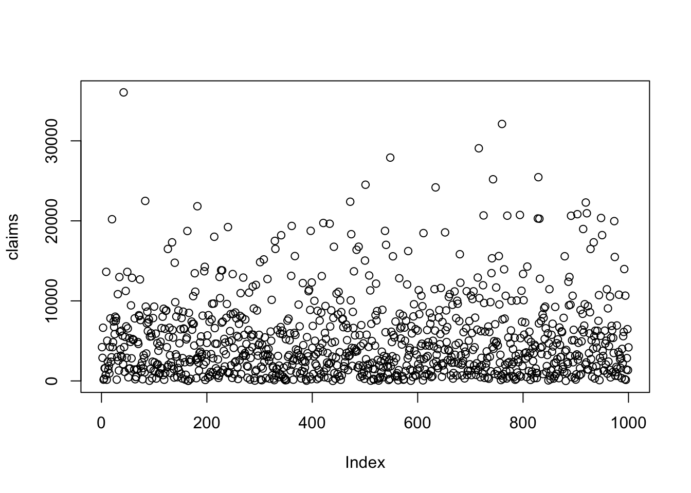
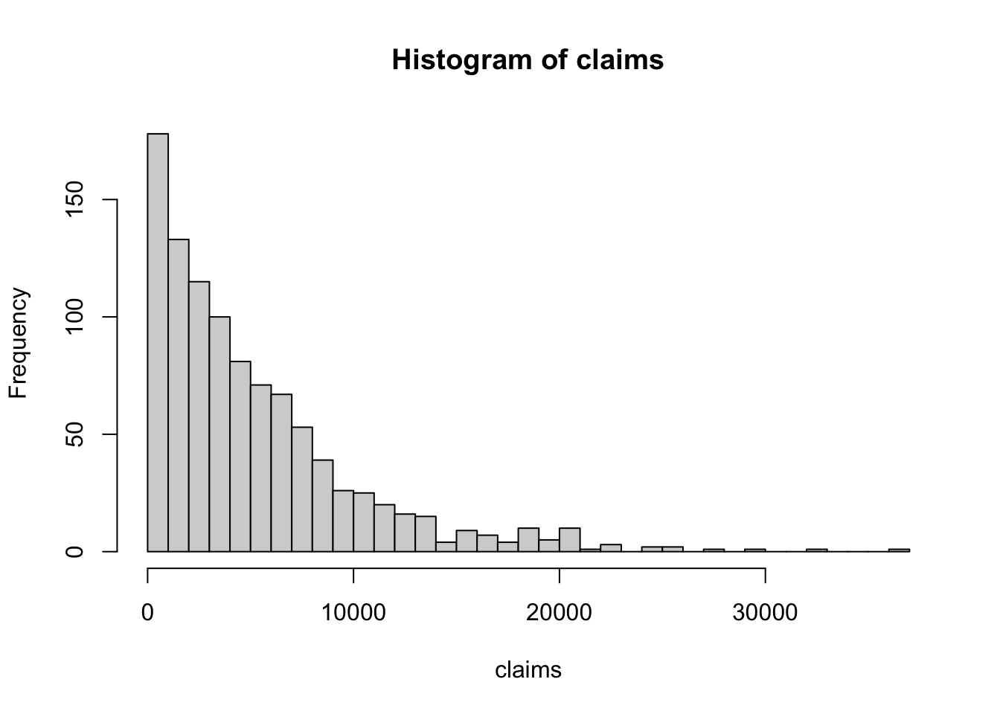
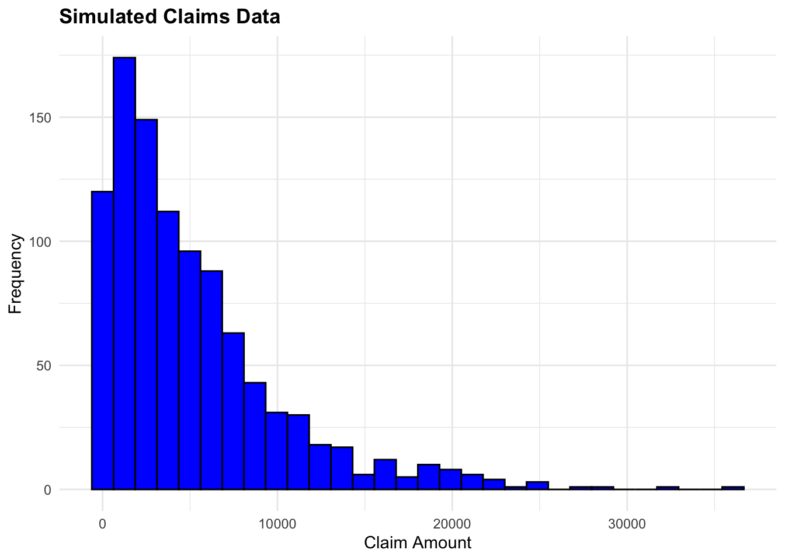
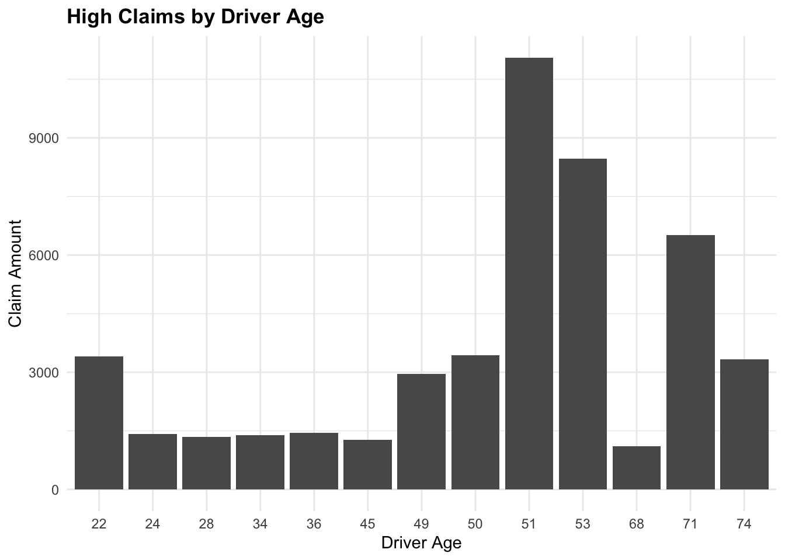
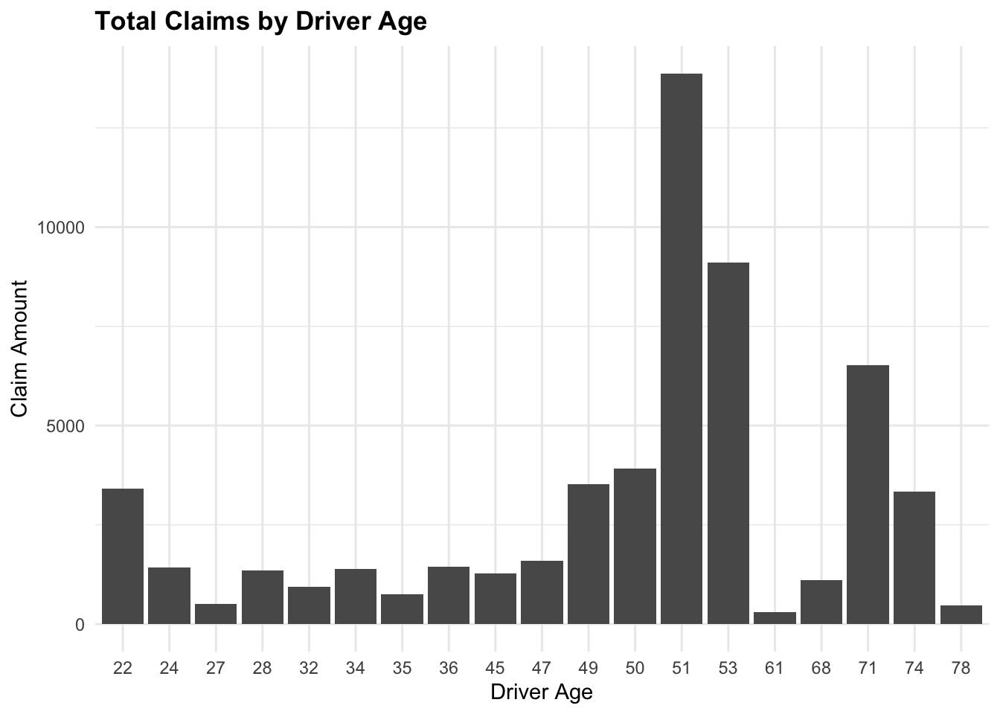

# Basic arithmetic and variable assignment
x <- 10
y <- 5
sum_xy <- x + y
sum_xy[1] 15ACTEX Learning - AFDP: R Session 1.2
Data manipulation is a fundamental skill in the field of data science. It involves the process of transforming, organizing, and cleaning raw data to make it suitable for analysis and visualization. R can be used in tasks such as determining premium rates for mortality and morbidity products, evaluating the probability of financial loss or return, providing business risk consulting, and planning for pensions and retirement. In essence, R is a powerful tool for actuaries and data scientists to perform complex data analysis and modeling.
R packages are collections of functions, data, and compiled code in a well-defined format. They are stored in a directory called library. A fresh R installation includes a set of packages that are loaded automatically when R starts. These packages are referred to as the base packages. The base packages are always available, and they do not need to be loaded explicitly.
Others packages are available for download from CRAN (Comprehensive R Archive Network) or other repositories, such as GitHub usually for package development versions. To install a package which is stored on CRAN, we can use the install.packages("") function. To load a package, use the library() function.
R has several data types, including numeric, character, logical, integer, and complex. The most common data types are:
Numeric - real numbersCharacter - textLogical - TRUE or FALSEInteger - whole numbersIt allows data to be on the form of:
Vectors of numbers, characters, or logical valuesMatrices which are arrays with two dimensionsArrays which are multi-dimensional generalizations of matricesData Frames which are matrices with columns of different typesLists which are collections of objectsR is a case-sensitive language, meaning that it distinguishes between uppercase and lowercase letters. It uses the # symbol to add comments to the code. Comments are ignored by the R interpreter and are used to explain the code.
# Basic arithmetic and variable assignment
x <- 10
y <- 5
sum_xy <- x + y
sum_xy[1] 15# Simple interest formula
P <- 1000 # Principal
r <- 0.05 # Interest rate
t <- 2 # Time in years
A <- P * (1 + r * t)
A[1] 1100R is a functional programming language, which means that it is based on functions. Functions are blocks of code that perform a specific task. They take input, process it, and return output.
There are two types of functions in R: base functions and user-defined functions. Base functions are built into R, while user-defined functions are created by the user.
For example, the mean() function calculates the average of a set of numbers. The mean() function takes a vector of numbers as input and returns the average of those numbers. To access a general function information in R, use the help() function, or the ? operator.
?mean()
help(mean)The c() function is used to combine values into a vector or list.
mean(c(1, 2, 3, 4, 5))[1] 3Useful base R function:
mean() - calculates the average of a set of numberssum() - calculates the sum of a set of numberssd() - calculates the standard deviation of a set of numbersvar() - calculates the variance of a set of numbersmin() - returns the minimum value in a set of numbersmax() - returns the maximum value in a set of numberslength() - returns the length of a vectorstr() - displays the structure of an R objectclass() - returns the class of an objecttypeof() - returns the type of an objectsummary() - provides a summary of an objectplot() - creates a plot of data …name <- function(variables) {
# Code block
}x <- c(1, 2, 3, 4, 5)
avg <- function(x) {
sum(x)/length(x)
}avg(x);[1] 3mean(x)[1] 3Data wrangling, manipulation, and transformation are essential techniques for preparing and refining data for analysis.
These processes, often performed using R packages like dplyr, tidyr, and data.table, are crucial steps in converting raw, disorganized data into meaningful insights. Together, they form the foundation for effective data analytics, which uses cleaned and well-structured data to perform descriptive, predictive, and inferential analyses.
As an example, consider a dataset with columns for ID, Age, and Salary. We can remove rows with missing values in the Age column and create a new column called IncomeGroup based on the Salary column.
# Create a data frame
data <- data.frame(
ID = 1:5,
Age = c(25, 30, NA, 45, 35),
Salary = c(50000, 60000, 55000, NA, 70000)
)
data ID Age Salary
1 1 25 50000
2 2 30 60000
3 3 NA 55000
4 4 45 NA
5 5 35 70000Handling missing values and creating a new variable can be done using the tidyverse set of packages. The dplyr package provides functions (or verbs) for data manipulation, such as filter(), mutate, select(), and more. The magrittr package provides the pipe operator (%>%) used to chain functions together, making the code more readable. Furthermore, the pipe operator has recently been included in base R as well, so called the “tee” operator (|>) or native pipe operator.
Load the tidyverse package:
library(tidyverse)cleaned_data <- data %>%
# Remove rows with missing Age values
filter(!is.na(Age)) %>%
# Create a new column based on Salary
mutate(IncomeGroup = ifelse(Salary > 60000, "High", "Low"))
cleaned_data ID Age Salary IncomeGroup
1 1 25 50000 Low
2 2 30 60000 Low
3 4 45 NA <NA>
4 5 35 70000 HighAn interesting function to use is from the janitor package. The clean_names() function cleans the column names of a data frame by converting them to lowercase, replacing spaces with underscores, and removing special characters.
cleaned_data %>%
# Clean column names (here the janitor package is called with ::)
janitor::clean_names() id age salary income_group
1 1 25 50000 Low
2 2 30 60000 Low
3 4 45 NA <NA>
4 5 35 70000 HighIn this example we will simulate a dataset of claims data. We will assume that the claims follow an exponential distribution with a mean of 5000. We will simulate 1000 claims and plot the data.
R provides functions to generate random numbers from different distributions, such as the rexp() function for creating a random exponential distribution, the rnorm() function for a random normal distribution, the runif() function for the uniform distribution, and others.
We can create a variable by the name of avg_claim_size to store the average claim size and a variable num_claims to store the number of claims to simulate.
avg_claim_size <- 5000
num_claims <- 1000For reproducibility, we can use the set.seed() function which assures that the random numbers generated are the same each time the code is run. Use the rexp() function to generate random numbers from an exponential distribution. And finally, plot the data using the plot() function.
set.seed(123)
claims <- rexp(n = num_claims,
rate = 1/avg_claim_size)
plot(claims)
To access the help page for the rexp() function, use the following code: ?rexp
To inspect data we can use functions such as str(), class(), or typeof(). The str() function provides a compact display of the internal structure of an R object. The class() function returns the class of the object. The typeof() function returns the type of the object. Another function that can be used to inspect data is glimpse() from the dplyr package.
str(claims) num [1:1000] 4217 2883 6645 158 281 ...class(claims)[1] "numeric"typeof(claims)[1] "double"The claims data is a numeric vector.
To have a basic summary of the data, we can use the summary() function.
summary(claims) Min. 1st Qu. Median Mean 3rd Qu. Max.
4.13 1533.46 3655.83 5149.90 7133.18 36055.04 There are a set of functions in base R for data visualization, such as plot(), hist(), and boxplot(), to create scatter plots, line plots, bar plots, histograms, and box plots.
For example, to make an histogram of the claims data, use the hist() function. The breaks argument specifies the number of intervals to divide the data into.
hist(claims, breaks = 30)
In addition, for a more customized plot, we can use the ggplot2 package, part of the tidyverse set of packages. The ggplot() function initializes a plot, and the geom_<>() functions add layers to the plot, the layers are chained using the + operator. More information on ggplot2 can be found in the ggplot2: Elegant Graphics for Data Analysis book by Hadley Wickham.
We can produce the same histogram as before using ggplot2, but first we need to convert the claims vector to be a data frame.
set.seed(1123)
claims_df <- data.frame(claim_id = sample(x = 1:num_claims,
size = num_claims,
replace = FALSE),
claim_amount = claims)
head(claims_df) claim_id claim_amount
1 624 4217.2863
2 102 2883.0514
3 427 6645.2743
4 324 157.8868
5 912 281.0549
6 380 1582.5061To create the histogram using ggplot2, we add the aesthetics of the plot using the aes() function, specify the x-axis and y-axis variables, and use the geom_histogram() function to create the histogram. The labs() function is used to add titles to the plot. There are other customizations that can be added to the plot, such as color, fill, and more.
ggplot(data = claims_df,
aes(x = claim_amount)) +
geom_histogram(bins = 30, fill = "blue", color = "black") +
labs(title = "Simulated Claims Data",
x = "Claim Amount",
y = "Frequency")
For this example, we will use the French Motor Third-Part Liability datasets: freMTPL2freq and freMTPL2sev. The datasets contain the frequency and severity of claims for a motor insurance portfolio.
The datasets are from the CASdatasets R-package, which provides a collection of datasets for actuarial science used in the book “Computational Actuarial Science with R” by Arthur Charpentier and Rob Kaas. We do not need to install the package as the data we need is already available in the data folder of this project. For more information on how to install the CASdatasets package please check the helper00.R file in the project folder.
Data can be accessed by loading it into the R environment with the load() function.
# freMTPLfreq has been reduced to 1000 rows for demonstration purposes
load("data/freMTPLfreq_1000.rda")
load("data/freMTPLsev.rda")R allows the user to manage different types of data, such as .Rdata, .rda, .rds, .csv, .txt, .xls, .xlsx, among others. The different types of data can be loaded into R using functions like load(), read.csv(), read.table(), read_excel(), and others. Each of these types of files occupies a specific format in memory.
The R Data Format Family, usually with extension . rdata or . rda, is a format designed for use with R for storing a complete R workspace or selected “objects” from a workspace in a form that can be loaded back by R. Once the file is loaded into R, the data is stored in the Environment as an object. The object can be accessed by its name.
Here we look at the first few rows of each dataset:
head(freMTPLfreq) PolicyID ClaimNb Exposure Power CarAge DriverAge
1 1 0 0.09 g 0 46
2 2 0 0.84 g 0 46
3 3 0 0.52 f 2 38
4 4 0 0.45 f 2 38
5 5 0 0.15 g 0 41
6 6 0 0.75 g 0 41
Brand Gas Region Density
1 Japanese (except Nissan) or Korean Diesel Aquitaine 76
2 Japanese (except Nissan) or Korean Diesel Aquitaine 76
3 Japanese (except Nissan) or Korean Regular Nord-Pas-de-Calais 3003
4 Japanese (except Nissan) or Korean Regular Nord-Pas-de-Calais 3003
5 Japanese (except Nissan) or Korean Diesel Pays-de-la-Loire 60
6 Japanese (except Nissan) or Korean Diesel Pays-de-la-Loire 60head(freMTPLsev) PolicyID ClaimAmount
1 63987 1172
2 310037 1905
3 314463 1150
4 318713 1220
5 309380 55077
6 309380 7593The freMTPLfreq dataset contains the risk features and the claim number, while the freMTPLsev dataset contains the claim amount and the corresponding policy ID.
We can use the glimpse() function from the dplyr package to get a quick overview of the datasets.
glimpse(head(freMTPLfreq))Rows: 6
Columns: 10
$ PolicyID <fct> 1, 2, 3, 4, 5, 6
$ ClaimNb <int> 0, 0, 0, 0, 0, 0
$ Exposure <dbl> 0.09, 0.84, 0.52, 0.45, 0.15, 0.75
$ Power <fct> g, g, f, f, g, g
$ CarAge <int> 0, 0, 2, 2, 0, 0
$ DriverAge <int> 46, 46, 38, 38, 41, 41
$ Brand <fct> "Japanese (except Nissan) or Korean", "Japanese (except Niss…
$ Gas <fct> Diesel, Diesel, Regular, Regular, Diesel, Diesel
$ Region <fct> Aquitaine, Aquitaine, Nord-Pas-de-Calais, Nord-Pas-de-Calais…
$ Density <int> 76, 76, 3003, 3003, 60, 60glimpse(head(freMTPLsev))Rows: 6
Columns: 2
$ PolicyID <int> 63987, 310037, 314463, 318713, 309380, 309380
$ ClaimAmount <int> 1172, 1905, 1150, 1220, 55077, 7593Check if there are any missing values in the datasets using the any() function. The is.na() function checks for missing values in the dataset.
any(is.na(freMTPLfreq));[1] FALSEany(is.na(freMTPLsev))[1] FALSEThe two datasets have a common variable, PolicyID, which can be used as a key to merge the datasets to create a single dataset that contains both the frequency and severity of claims.
Something to notice is that PolicyID is stored as a character variable in the freMTPLfreq dataset and as an integer variable in the freMTPLsev dataset. So, in order to proceed with merging the two sets, we need to transform the PolicyID variable in the freMTPLfreq dataset to an integer type.
The mutate() function is used to create a new variable, or to make a modification to an existing one, as in this case, to transform PolicyID as an integer type.
freMTPLfreq <- freMTPLfreq %>%
mutate(PolicyID = as.integer(PolicyID))We could have done this with base R as well, using the as.integer() function.
freMTPLfreq$PolicyID <- as.integer(freMTPLfreq$PolicyID)The way to use the $ operator is to access a variable in a data frame. The class() function is used to check the class of the modified object.
freMTPLfreq$PolicyID %>% class()[1] "integer"We can now combine the two datasets using the merge() function from base R which merges two datasets based on a common variable, in this case, the PolicyID variable.
There are other functions that can be used to merge datasets, such as inner_join(), left_join(), right_join(), and full_join() from the dplyr package, depending on the desired output.
claims_data_raw <- freMTPLfreq %>%
merge(freMTPLsev, by = "PolicyID")
claims_data_raw %>% dim()[1] 30 11claims_data_raw %>% names() [1] "PolicyID" "ClaimNb" "Exposure" "Power" "CarAge"
[6] "DriverAge" "Brand" "Gas" "Region" "Density"
[11] "ClaimAmount"claims_data_raw %>%
summary() PolicyID ClaimNb Exposure Power CarAge
Min. : 33.0 Min. :1.000 Min. :0.0100 g :6 Min. : 0.000
1st Qu.:377.2 1st Qu.:1.000 1st Qu.:0.4775 i :5 1st Qu.: 0.000
Median :497.0 Median :1.000 Median :0.6500 e :4 Median : 0.000
Mean :506.4 Mean :1.267 Mean :0.5507 j :4 Mean : 2.733
3rd Qu.:703.0 3rd Qu.:1.750 3rd Qu.:0.7150 l :4 3rd Qu.: 6.500
Max. :956.0 Max. :2.000 Max. :0.9600 d :3 Max. :10.000
(Other):4
DriverAge Brand Gas
Min. :22.00 Fiat : 0 Diesel : 5
1st Qu.:38.25 Japanese (except Nissan) or Korean:27 Regular:25
Median :50.00 Mercedes, Chrysler or BMW : 0
Mean :47.97 Opel, General Motors or Ford : 1
3rd Qu.:51.00 other : 0
Max. :78.00 Renault, Nissan or Citroen : 2
Volkswagen, Audi, Skoda or Seat : 0
Region Density ClaimAmount
Ile-de-France :21 Min. : 23 Min. : 73.0
Aquitaine : 5 1st Qu.: 1724 1st Qu.: 580.5
Pays-de-la-Loire : 2 Median : 3121 Median :1048.5
Basse-Normandie : 1 Mean : 9288 Mean :1873.4
Nord-Pas-de-Calais: 1 3rd Qu.:16786 3rd Qu.:1446.8
Bretagne : 0 Max. :27000 Max. :9924.0
(Other) : 0 We can filter the data to include only claims greater than 1000 and summarize the total claims by year. The group_by() function is used to group the data by a specific variable, and the reframe() function is used to calculate summary statistics for each group.
# Filter data for claims greater than 1000
high_claims <- claims_data_raw %>% filter(ClaimAmount > 1000)ggplot(data = high_claims,
aes(x = factor(DriverAge), y = ClaimAmount)) +
geom_col() +
labs(title = "High Claims by Driver Age",
x = "Driver Age",
y = "Claim Amount")
claims_summary <- claims_data_raw %>%
group_by(DriverAge) %>%
reframe(TotalClaims = sum(ClaimAmount))
claims_summary# A tibble: 19 × 2
DriverAge TotalClaims
<int> <int>
1 22 3409
2 24 1418
3 27 508
4 28 1344
5 32 936
6 34 1390
7 35 747
8 36 1449
9 45 1274
10 47 1584
11 49 3532
12 50 3909
13 51 13868
14 53 9105
15 61 302
16 68 1107
17 71 6518
18 74 3332
19 78 471ggplot(data = claims_summary,
aes(x = factor(DriverAge), y = TotalClaims)) +
# fix the bar plot
geom_col() +
labs(title = "Total Claims by Driver Age",
x = "Driver Age",
y = "Claim Amount")
ggplot(data = claims_data %>% filter(Premium < 10000),
aes(x = projected_claims, y = Premium)) +
# Add points
geom_point() +
# Add a smooth line
geom_smooth()+
labs(title = "Projected Claims vs Premium",
x = "Projected Claims",
y = "Premium")
In this lesson, we have introduced the basics of R programming, including functions, data types, and syntax. We have explored data manipulation techniques using base R functions and the tidyverse set of packages. We have also worked with simulated and real-world claims data to perform data wrangling, manipulation, and visualization.
R is a powerful tool for actuaries and data scientists, offering a wide range of functions and packages for data analysis, modeling, and visualization. By mastering R programming, actuaries can enhance their analytical skills, improve decision-making, and drive innovation in the insurance industry.
In the next lesson, we will delve deeper into data analysis and modeling techniques, exploring predictive modeling using R.